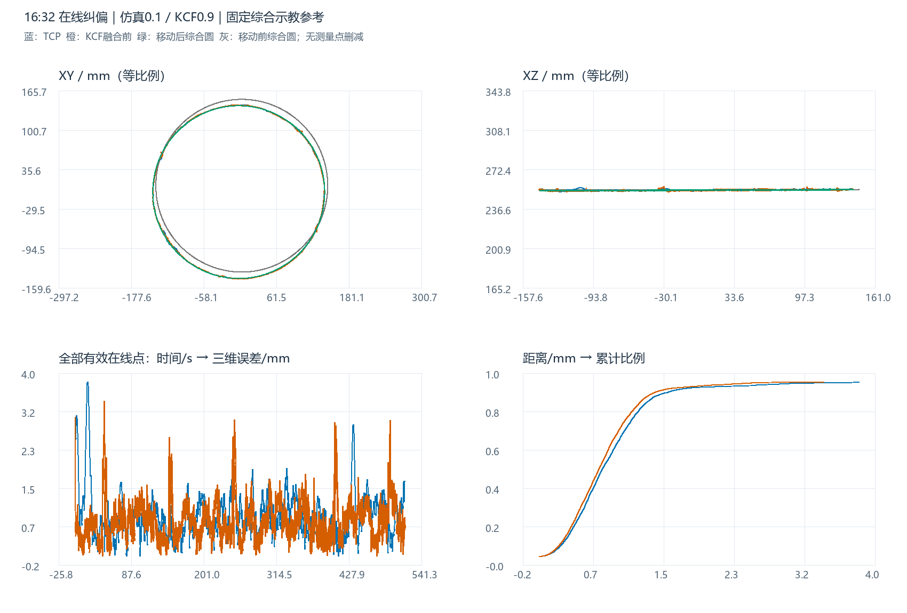

在线纠偏结果分析：仿真0.1 / KCF0.9
综合示教参考下的空间误差、轴向波动与融合效果
参考对象已按用户确认固定：此前四组历史示教等权综合的原始示教圆，半径 142.035339635 mm。本轮只按融合前KCF估计圆心和法线进行刚体移动，未重估综合半径，未使用TCP优化参考。该移动后对象是估计参考，不能直接称为独立真实焊缝真值。
1. 数据范围、权重与坐标
原始机器人状态6,721条，视觉诊断7,898条。TCP筛选 online_running、CORFLAG=1、DETFLAG=1、S_START=1、S_HOLD=0、ALARM=0，保留5,855点；KCF及融合后视觉筛选 online_running、result_valid=1，各保留7,597点。无测量点平滑、拟合替换或峰值剔除；拟合只用于参考定位和描述圆参数。
全部有效在线视觉点记录的KCF X/Y权重均为0.9，仿真先验权重均为0.1，7,597点记录fusion_applied=1；像素融合公式复算最大差0.00003020 px。会话目录名称和实际日志一致；固定比例直接作用于当前KCF与仿真像素，不应称作自动卡尔曼权重。
统一坐标为变位机末节随动坐标系（材料系）：机器人基坐标经RBCALIB转换到固定站系，再逐点消除Ry(S1)Rz(S2)外轴旋转。视觉通过当前相机标定和该帧机器人姿态投影，复算与归档一致。与变位机工具TCP系相比，本报告的Z加回231 mm；如切到工具TCP系，所有圆心Z减231 mm，半径和误差不变。
2. 四轨迹三维图与各轴波动
蓝：TCP；橙：融合前KCF；灰色虚线：移动前综合原始示教；绿：移动后综合示教。紫色融合后视觉可从图例打开。提供3D、XY、XZ、YZ视角、两组示教独立显示切换以及Z倍率；默认1×等比例。生成W点是上轮综合后的参考采样，并非独立实测焊缝点。
相对参考圆的ΔX、ΔY、ΔZ
每个点减去圆周最近点，既能观察各轴波动，也避免整圈运动的百毫米坐标变化掩盖毫米量级误差。不是TCP与视觉按同一时间配对的差值；各轴分量不能直接当作沿缝时滞。

3. 参考来源与圆参数
| 历史示教 | W点数 | 拟合半径/mm | 综合权重 |
|---|---|---|---|
| 20230608CHUFENGKOU | 1687 | 140.6477 | 25% |
| 20250606CHUFENGKOU | 1663 | 141.6920 | 25% |
| 20260308CHUFENGKOU | 1355 | 142.0846 | 25% |
| 20260404CHUFENGKOU1 | 1368 | 143.7170 | 25% |
沿用原综合结果：各组历史W几何去重、2°周向分箱取代表点、分别拟合平面圆，再等权综合半径。历史来源未重新挑选，不按本轮误差反向选择最有利半径。原始综合示教中心/法线与上一轮相同，移动后中心/法线对齐本轮融合前KCF。绕法线的相位对圆几何不可辨识，采用最小旋转。
| 圆 | 圆心X/mm | 圆心Y/mm | 圆心Z/mm | 半径/mm | 单位法线 |
|---|---|---|---|---|---|
| 固定综合原始示教（移动前） | 4.4924 | 8.9094 | 253.9076 | 142.0353 | -0.000832582, 0.001575923, 0.999998412 |
| 移动后综合示教参考 | -0.4787 | -1.6603 | 253.6341 | 142.0353 | -0.003216305, -0.000208452, 0.999994806 |
| TCP 实际轨迹拟合圆 | -0.5238 | -1.7066 | 253.7857 | 141.9083 | -0.002778846, 0.000029468, 0.999996139 |
| KCF 融合前拟合圆 | -0.4787 | -1.6603 | 253.6341 | 141.9644 | -0.003216305, -0.000208452, 0.999994806 |
| 融合后视觉拟合圆 | -0.4937 | -1.6744 | 253.7251 | 141.8416 | -0.003238995, -0.000527023, 0.999994616 |
上述所有圆心均在同一末节随动系。TCP、KCF及融合后圆仅用于描述，不替换原始测量走势。原始综合与移动后半径相同；移动后圆心、法线等于KCF拟合结果，是位姿对齐的定义。
4. 主误差结果
| 轨迹 | 点数 | 平均/mm | 最大/mm | RMSE/mm | P95/mm | ≤2 mm | ≤3 mm | >3 mm点数 |
|---|---|---|---|---|---|---|---|---|
| TCP 实际轨迹 | 5855 | 0.8479 | 3.8369 | 0.9853 | 1.6022 | 97.18% | 99.16% | 49 |
| KCF 融合前 | 7597 | 0.7795 | 3.4193 | 0.8864 | 1.4559 | 98.03% | 99.93% | 5 |
| 融合后视觉 | 7597 | 0.8129 | 3.4266 | 0.9206 | 1.5638 | 98.18% | 99.92% | 6 |
c = 移动后综合圆心；n = 圆平面单位法线；R = 142.035339635 mm h = (p-c)·n；ρ = ||(p-c)-h n|| 三维误差 e = √((ρ-R)²+h²) 平均 = mean(e)；最大 = max(e)；RMSE = √mean(e²)
误差是到连续三维综合圆周的解析最短距离。与此前最终综合报告同口径，不使用圆周绘图折线、最近采样点或按行号配对误差。统计按记录样本加权，保留全部有效在线点，未使用时序加权或弧长加权。不把参考来源于KCF的结果解释成绝对标定精度。
5. 局部峰值、各轴分量与时间分布
| 轨迹 | 径向有符号均值/mm | 径向RMSE/mm | 离面有符号均值/mm | 离面RMSE/mm | ΔX RMSE/mm | ΔY RMSE/mm | ΔZ RMSE/mm |
|---|---|---|---|---|---|---|---|
| TCP 实际轨迹 | -0.1653 | 0.8304 | 0.1508 | 0.5302 | 0.6176 | 0.5549 | 0.5305 |
| KCF 融合前 | -0.1022 | 0.7682 | 0.0057 | 0.4423 | 0.5510 | 0.5352 | 0.4423 |
| 融合后视觉 | -0.2298 | 0.8097 | 0.1004 | 0.4380 | 0.6077 | 0.5352 | 0.4379 |
径向/离面均值有正负，三维距离非负。当前参考中心和法线由KCF定位，会吸收整体位姿偏差，各轴误差不能直接当成独立标定误差。
| 轨迹 | 时段 | 点数 | 平均/mm | RMSE/mm | 最大/mm | >3 mm点数 |
|---|---|---|---|---|---|---|
| TCP 实际轨迹 | 前60秒 | 677 | 1.1367 | 1.4770 | 3.8369 | 49 |
| TCP 实际轨迹 | 60秒以后 | 5178 | 0.8102 | 0.9013 | 2.8986 | 0 |
| KCF 融合前 | 前60秒 | 813 | 0.6418 | 0.8122 | 3.4193 | 4 |
| KCF 融合前 | 60秒以后 | 6784 | 0.7960 | 0.8949 | 3.0066 | 1 |
| 融合后视觉 | 前60秒 | 813 | 0.6459 | 0.8096 | 3.4266 | 3 |
| 融合后视觉 | 60秒以后 | 6784 | 0.8329 | 0.9330 | 3.1118 | 3 |
TCP超3 mm的49个点全部集中在有效在线数据开始后的前60秒，60秒以后最大误差2.899 mm。以上时间从保留轨迹的最早时间起算，不是会话启动时间。
以下事件按相邻记录误差均超过3 mm归组，记录间隔大于200 ms则拆分；3 mm用于观察偏离，不宣称为严格工艺合格线。表内保留TCP和融合前后视觉事件，最多显示15段，完整结果可下载。
| 轨迹 | 开始 | 结束 | 点数 | 最大/mm | 峰值径向/mm | 峰值离面/mm |
|---|---|---|---|---|---|---|
| TCP 实际轨迹 | 16:33:05.712 | 16:33:09.268 | 41 | 3.8369 | -2.6336 | 2.7904 |
| 融合后视觉 | 16:32:47.925 | 16:32:47.925 | 1 | 3.4266 | -2.0204 | 2.7676 |
| KCF 融合前 | 16:33:33.728 | 16:33:33.794 | 2 | 3.4193 | 0.3187 | 3.4044 |
| KCF 融合前 | 16:33:33.563 | 16:33:33.563 | 1 | 3.3943 | 0.4081 | 3.3697 |
| 融合后视觉 | 16:41:00.149 | 16:41:00.281 | 3 | 3.1118 | -3.1112 | -0.0569 |
| TCP 实际轨迹 | 16:32:49.930 | 16:32:50.288 | 5 | 3.1005 | -2.9901 | -0.8202 |
| 融合后视觉 | 16:33:33.728 | 16:33:33.728 | 1 | 3.0707 | 0.2241 | 3.0625 |
| KCF 融合前 | 16:32:47.925 | 16:32:47.925 | 1 | 3.0658 | -1.5682 | 2.6344 |
| 融合后视觉 | 16:33:33.563 | 16:33:33.563 | 1 | 3.0451 | 0.2970 | 3.0305 |
| TCP 实际轨迹 | 16:32:50.629 | 16:32:50.808 | 3 | 3.0311 | -2.9818 | -0.5443 |
| KCF 融合前 | 16:36:56.940 | 16:36:56.940 | 1 | 3.0066 | -2.6176 | 1.4791 |
本轮最大偏离为TCP 实际轨迹在16:33:07.425的3.837 mm，径向分量-2.634 mm、离面分量2.790 mm。仅凭轨迹尚不能区分控制滞后、图像误差或真实局部形状；未将其直接归因为某个模块故障。
6. 固定0.1/0.9融合的实际影响
有效视觉点的融合前后空间位移平均0.182 mm，P95 0.332 mm，最大0.737 mm。固定同一个移动后参考，融合前RMSE 0.886 mm，融合后0.921 mm，增加0.034 mm；融合前后最大分别为3.419 / 3.427 mm，超3 mm点数分别为5 / 6。
这轮数据未显示固定融合能降低该几何指标。但参考位姿由融合前KCF建立，对它存在共享观测优势；融合后几何距离略大也不能单独证明仿真先验无效或在线控制变差。记录中correlation_jump_rejected=0、fusion_jump_rejected=0。
7. 在线ICP链路证据
对应16:32会话的局部配准目录有96个候选归档，其中34个记录验收通过，34份写回记录，34份独立后验观测验证成功。此处的“独立”是在线链路的后验观测标记，仍可能共享相机、标定和检测偏差，不能升级成外部测量真值。
已将归档里768个不同帧的融合前独立观测与诊断像素复算对照，最大差1.24e-07 mm。候选验收/拒绝、前后残差保留在配准指标表；写回和后验清单见归档摘要。这些证据支持链路实际运行过，不直接等于相对实物焊缝的绝对精度。
8. 与15:23上一轮同参考定义对比
| 轨迹 | 上一轮平均/mm | 本轮平均/mm | 上一轮RMSE/mm | 本轮RMSE/mm | RMSE变化/mm | 上一轮最大/mm | 本轮最大/mm |
|---|---|---|---|---|---|---|---|
| TCP 实际轨迹 | 0.7838 | 0.8479 | 0.8950 | 0.9853 | 0.0902 | 2.5685 | 3.8369 |
| KCF 融合前 | 0.7677 | 0.7795 | 0.9006 | 0.8864 | -0.0142 | 6.4706 | 3.4193 |
| 融合后视觉 | 0.7665 | 0.8129 | 0.8959 | 0.9206 | 0.0246 | 6.3021 | 3.4266 |
两轮沿用同一历史综合半径，各自由本轮融合前KCF估计参考位姿。比较的是相同几何评价方式下的描述结果；采集批次、机器人状态和检测观测不同，未构成只改变一个融合参数的受控实验。尤其TCP最大值和RMSE升高，与KCF峰值降低同时存在，应分别报告。
9. 参考敏感性与结论边界
按交错20°扇区留出，一半扇区估计圆心/法线，另一半评价，KCF合并留出RMSE为0.928 mm；本轮有效KCF周向覆盖约359.64°。留出验证减少同一点同时拟合与评价的复用，但不能消除共享系统误差。
| 轨迹 | 留一组示教：平均范围/mm | RMSE范围/mm | 最大范围/mm |
|---|---|---|---|
| TCP 实际轨迹 | 0.846–0.971 | 0.983–1.157 | 3.477–4.173 |
| KCF 融合前 | 0.778–0.904 | 0.885–1.046 | 3.410–3.516 |
表中只展示历史综合来源“每次留掉一组”时的尺寸敏感性，主结果的半径始终固定，不从该表选择更有利参考。未提供本轮工件移动后的独立实测焊缝；事后整圈参考也不是在线控制器每一帧的实际目标。当前只复核现有标定文件，没有完整历史标定快照；复算一致说明当前转换可解释日志，不能代替历史标定准确性的证明。
10. 后续建议与复现材料
优先回查16:33:07附近TCP偏离的状态时序、纠偏指令与图像，再核对16:33:33附近KCF峰值，保留原始点。若要判断0.1/0.9是否优于自动卡尔曼，建议在相同参考、相近运行条件下重复采集，并同时比较TCP峰值、RMSE、离面波动及异常段；判断绝对精度则需要独立测得的移动后焊缝或工件位姿。
验证记录：181项输入哈希、95个独立标量几何复算及逐点误差分量恒等式通过；无鼠标Edge浏览器渲染和DOM事件检查覆盖视角、两组示教独立切换及Z倍率，手动拖拽/缩放/平移未执行。浏览器检查记录。
复现：依次运行本目录analyze.py、build_report.py、verify.py。原始输入只读，所有新增产物均位于本目录；依赖沿用已有NumPy、pandas、Pillow与本地Plotly，不需要联网加载图表。